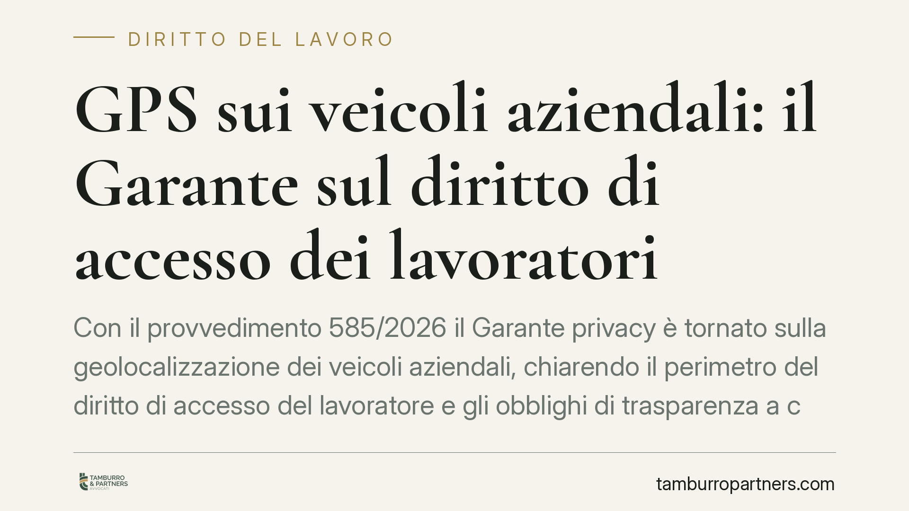

GPS sui veicoli aziendali: il Garante sul diritto di accesso dei lavoratori
Con il provvedimento 585/2026 il Garante privacy è tornato sulla geolocalizzazione dei veicoli aziendali, chiarendo il perimetro del diritto di accesso del lavoratore e gli obblighi di trasparenza a carico del datore. La decisione interessa chiunque impieghi dipendenti dotati di mezzi tracciati tramite GPS e impone una verifica delle prassi aziendali in essere.

Il fatto
Il Garante per la protezione dei dati personali, con il provvedimento n. 585/2026 del 14 ottobre 2026, si è pronunciato su un reclamo relativo al trattamento dei dati di geolocalizzazione raccolti tramite dispositivi GPS installati su veicoli aziendali.
Al centro della decisione due profili distinti ma connessi: il diritto del lavoratore di accedere ai dati che lo riguardano e gli obblighi di informativa gravanti sul datore di lavoro. Il Garante ha ribadito che la posizione del mezzo, quando è associabile a un lavoratore identificabile, costituisce dato personale a tutti gli effetti.
Inquadramento normativo
La materia si colloca all'incrocio di due discipline. Da un lato il Regolamento UE 2016/679 (GDPR), che all'art. 15 riconosce all'interessato il diritto di accesso, cioè la facoltà di ottenere conferma del trattamento e copia dei dati trattati, insieme alle informazioni su finalità, destinatari e periodo di conservazione. L'art. 13 impone inoltre un'informativa chiara e preventiva.
Dall'altro lato l'art. 4 dello Statuto dei lavoratori (l. 300/1970), che regola gli strumenti dai quali deriva un controllo a distanza dell'attività. Il GPS rientra tra questi: il suo impiego richiede, salvo le eccezioni di legge, accordo sindacale o autorizzazione dell'Ispettorato del lavoro, e comunque un'informazione adeguata al lavoratore sulle modalità d'uso e sui controlli.
Il Garante ha letto le due discipline in modo integrato: la liceità del trattamento ai fini privacy presuppone il rispetto delle condizioni poste dall'art. 4, e l'informativa deve dare conto anche delle finalità di eventuale controllo.
Cosa dice il provvedimento
Il diritto di accesso, chiarisce il Garante, non può essere compresso con motivazioni generiche. Il datore deve consentire al lavoratore di conoscere quali dati di posizione sono stati raccolti e conservati, per quanto tempo e con quali finalità.
Non è sufficiente aver installato il sistema in modo astrattamente legittimo: occorre che la trasparenza sia effettiva e che l'interessato possa esercitare i propri diritti senza ostacoli procedurali ingiustificati. La conservazione dei dati, inoltre, deve rispondere al principio di minimizzazione, limitandosi al tempo strettamente necessario alle finalità dichiarate.
Implicazioni pratiche
Per il datore di lavoro la decisione impone un duplice ordine di verifiche. Sul piano documentale, l'informativa consegnata ai dipendenti deve descrivere con precisione il funzionamento del dispositivo, le finalità del tracciamento e i tempi di conservazione. Formule vaghe espongono a contestazioni.
Sul piano procedurale, va predisposto un canale che consenta di evadere le richieste di accesso nei termini di legge (di regola un mese dalla ricezione). L'assenza di una procedura strutturata è spesso essa stessa fonte di violazione.
Per il lavoratore, il provvedimento conferma uno strumento concreto: la possibilità di conoscere la mole e la natura dei dati di posizione raccolti, elemento rilevante anche in eventuali controversie sull'uso disciplinare di tali informazioni.
Cosa fare in concreto
- Rivedete l'informativa privacy destinata ai dipendenti dotati di veicoli tracciati, verificando che indichi finalità, tempi di conservazione e modalità del controllo.
- Verificate il titolo di legittimazione ex art. 4: accordo sindacale o autorizzazione dell'Ispettorato, a seconda dei casi, devono essere in regola e aggiornati.
- Definite tempi di conservazione proporzionati e documentateli, eliminando i dati non più necessari.
- Predisponete una procedura interna per gestire le richieste di accesso entro i termini del GDPR, individuando un referente.
- Formate il personale che gestisce i sistemi di geolocalizzazione sui limiti del trattamento e sul divieto di controlli non consentiti.
Consigliamo di affrontare questi adempimenti in modo coordinato tra funzione HR e responsabile della protezione dei dati, evitando interventi parziali che lasciano scoperti i profili lavoristici o quelli privacy.
---
*Contributo informativo a cura di Tamburro & Partners - Avv. Giuseppe Tamburro. Non costituisce parere legale.*
Ogni storia di lavoro ha i suoi tempi.
Se gestisci HR e vuoi un confronto su contenzioso, ispezioni o licenziamenti, scrivi allo studio. Ti rispondiamo entro un giorno lavorativo.